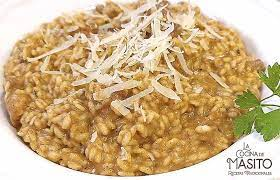

¡Unidos Por Amino hace pasta!
El icónico movimiento que aboga por la liberación de la aplicación AminoApps, se ha reunido este sábado para preparar una olla de rico, abundante, delicioso, sabroso y zuculento penne. de la mano del jefe del movimiento Peri "El peras" Pro, aliade peronista y activista en contra de comunismo de derechas.